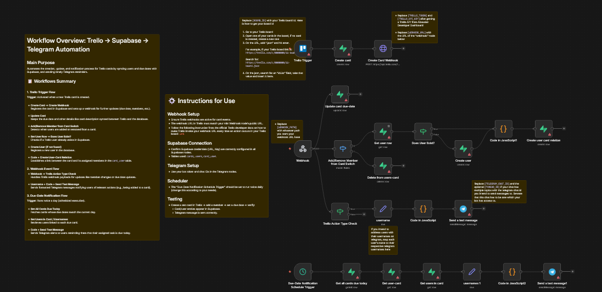

نظام أتمتة شامل يراقب بطاقات Trello، يسجّل البيانات في Supabase، يرسل إشعارات Telegram عند تعيين المهام أو إزالتها، ويُنبّه الفريق تلقائياً عند اقتراب المواعيد النهائية — مع رسائل مرحة مخصصة!

رسائل مخصصة ومرحة تُرسل تلقائياً عند كل حدث في Trello.
📝 يا @أحمد! تم إضافتك لبطاقة "تصميم الواجهة الأمامية". حظاً سعيداً! 🎯
🔥 @سارة، تم إزالتك من بطاقة "مراجعة API". يا محظوظة! 😄
⚠️⚠️⚠️
يا @خالد! عندك مهمة موعدها اليوم! تحرّك الحين!!!
النظام يتكون من 3 مسارات عمل تعمل معاً: إنشاء البطاقات، إشعارات الأعضاء، وتنبيهات المواعيد.
عند إنشاء بطاقة جديدة في Trello، يتم تسجيلها تلقائياً في Supabase وإنشاء Webhook مخصص لمراقبة تحديثاتها المستقبلية.
عند إضافة أو إزالة عضو من بطاقة، يُرسل رسالة Telegram مخصصة ومرحة مع تفاصيل المهمة — ويُحدّث قاعدة البيانات تلقائياً.
كل 12 ساعة، يفحص جميع البطاقات المستحقة اليوم ويرسل تنبيه عاجل لكل عضو مُعيّن عليها عبر Telegram.
44% من الفرق تفوّت مواعيد التسليم لأن لا أحد يتابع البطاقات في Trello.
محرك الأتمتة
إدارة المهام
الإشعارات
قاعدة البيانات
ربط الأحداث
تنبيه كل 12 ساعة
خلال ثوانٍ من الحدث
في مشروع واحد متكامل
5 رسائل عشوائية لكل حدث
ملف JSON جاهز للاستيراد في N8N
مجاني 100%
احصل على API Key و Token من Atlassian Developer ↗
أنشئ 3 جداول في Supabase ↗:
أنشئ بوت عبر @BotFather في Telegram، انسخ Token، واضبط Chat ID في nodes الإرسال.
في nodes "username" و "usernames 1"، اربط أسماء Trello بمعرّفات Telegram:
"أحمد": "@ahmed_tg",
"سارة": "@sara_tg",
"خالد": "@khaled_tg"أنشئ بطاقة في Trello → أضف عضواً → شاهد الإشعار في Telegram خلال ثوانٍ!
يمكن ربط النظام مع Slack, WhatsApp, Notion أو أي أداة أخرى — تواصل معي!